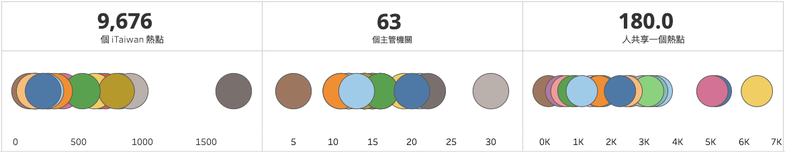
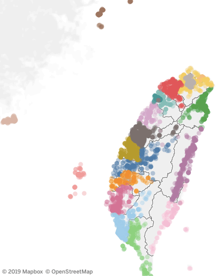
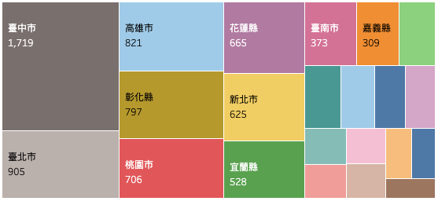
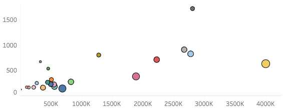

iTaiwan Free Wifi
I came across this dataset that contains latitude and longitude for each hotspot, which is perfect for me to explore Tableau’s mapping function. Since it only includes geographic information, I merged the land area and population statistics to analyse the spatial distribution and density.
As I am relatively new to Tableau, I focus on applying different tools and editing the styles, not exploratory data analysis. Therefore, the narratives below will emphasise on the functions that I used for this viz.
Tableau Viz
Check out the viz here!
Overview

The top row shows the total number of hotspots, the total number of administrative agencies responsible, and the average number of user per hotspot across the nation. I had to create a placeholder of 1 and put three copies of it in the column shelf with a bar chart layout to make the text appear to be in the middle.
The bottom row demonstrated the number for each city, instead of the entire country. As I am writing now, I realised that I could have used the “size” mark for each circle, rather than just using colours.
Hotspot Distribution
I set the value type to latitude and longitude and Tableau automatically generated the map. Considering my previous mapping was done in Python with geopandas and folium, this process is significantly easier than I expected, just simply drag and drop.
I decided to show each hotspot instead of using a density map as I previously planned as I believe the colour code gives user a clear distinction between the cities.

Hotspot Counts and Density
Sheet 2 has already shown the number of hotspots in each city. Still, I prefer to see the values directly over hovering.
Following, a scatter plot that shows the average number of citizens sharing one hotspot. Again, as I am writing, I realised the word “density” is incorrect for the graph.


Conclusion
Although major cities have much more hotspots, the large numbers of citizens resulted in a high number of average users per hotspot. For example, Taichung City has 2.8 million residents sharing 1,719 hotspots, average 1,631 users per hotspot, and Lien Jiang County has 13,056 residents sharing 112 hotspots, averaging 117 users per hotspot.
All of the iTaiwan Wifi is available in government buildings. While Lien Jiang County has only a small number of residents, it still has a city hall and public service facilities; therefore, it is understandable that it has the lowest number of average users per hotspot.
On the contrary, it is obvious that there’s a lack of hotspots in major cities, such as Taipei, Taichung, and Kaohsiung. Taiwanese government should consider installing more iTaiwan Wifi connection point in these big cities and offer accessible and fast internet for all everyone.
Reflection
I noticed several mistakes after I uploaded the graph because I didn’t take time to plan my visualisation and examine my final dashboard. It is always so exciting to start a new vis that I jumped right in. However, the initial analysis is just as critical as the final product.
Still, I am thrilled with this experiment as it allowed me to explore the mapping function. Next time, I should think about what information I can present, what other data I need to obtain for the information, and what sheets I should include in the dashboard. Just because I have a sheet ready does not mean it should be in the panel.
Lastly, I would like to thank Lindsey Poulter for her restaurant rival revealer vis on Tableau. Without her generously making this vis available for download, I wouldn’t be able to examine in detail and replicate the design. The dashboard was done on 30 December, 2019.